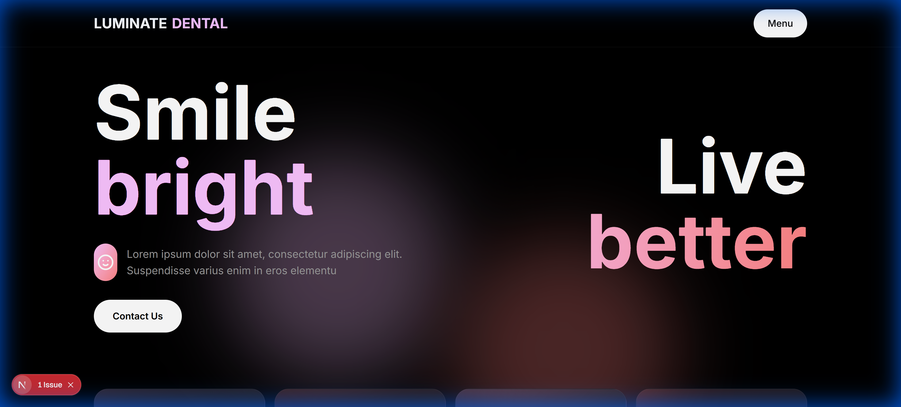
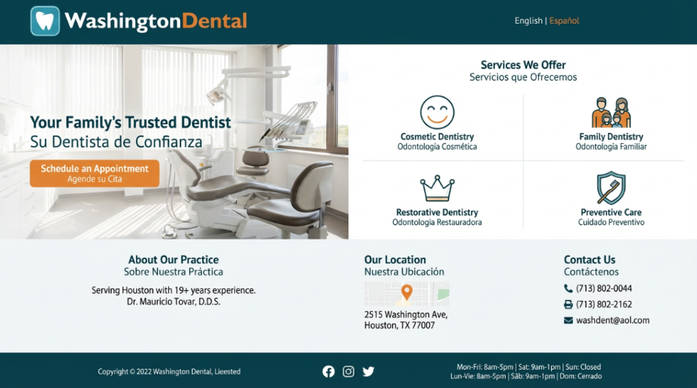

Executive Summary
Washington Dental requires a modern, responsive, and patient-centric website to strengthen its implementation of
a new digital strategy. This proposal outlines the development of a high-performance web application designed to
attract new patients, streamline appointment bookings, and showcase your dental services with a premium
aesthetic.
Design Sneak Peek
New Design Concept

Reference / Current Style

Project Objectives
- Modernize Online Presence: Create a visually stunning, professional design that instills
trust and reflects the quality of care provided.
- Mobile-First Responsiveness: Ensure the site performs flawlessly on all devices (mobile
phones, tablets, and desktops).
- Search Engine Optimization (SEO): Implement technical SEO best practices to improve local
search visibility for terms like "Dentist near me" and specific dental services.
- Performance & Speed: Deliver near-instant load times to reduce bounce rates and improve
user experience.
- 24/7 Patient Availability: Implement an intelligent voice agent to handle after-hours
inquiries and secure appointments around the clock.
Scope of Work
1. Design & User Experience (UX)
- Visual Identity: Implementation of a clean, modern aesthetic (referencing the "Luminate"
design style).
- Navigation: Intuitive menu structure for easy access to "Services," "About Us," and
"Contact" information.
- Call-to-Action (CTA): Strategically placed "Book Appointment" buttons to drive conversions.
2. Development (Technical Specifications)
- Framework: Next.js (React) for server-side rendering, speed, and SEO advantages.
- Styling: Tailwind CSS for a custom, unique design system without bloat.
- Content Management: Easy-to-update text and images.
- Contact Integration: Functional contact forms and integration with booking systems.
- Voice Agent Integration: Deployment of an AI-driven concierge to answer calls, handle FAQs,
and book appointments directly into your calendar, ensuring no missed opportunities after hours.
3. AI Voice Agent Specification
Persona: Friendly, Professional, and Empathetic
Technology: OpenAI GPT-4 Turbo & ElevenLabs Voice Synthesis
Core Responsibilities:
- Scheduling: Collecting patient info and booking slots (Mon-Sat).
- Inquiries: Answering questions about General, Cosmetic, and Emergency dentistry.
- Insurance: Verifying acceptance of major plans (Delta, Cigna, MetLife, etc.).
- Smart Capabilities: Uses
checkAvailability for slots,
scheduleAppointment for booking, and transferCall to route complex issues to
staff.
- Compliance: HIPAA-compliant formatting, never discussing specific patient records.
"Thank you for calling Washington Dental. I'm here to help you schedule appointments... How may I assist
you today?"
4. Key Pages
- Home/Landing Page: Hero section with value proposition, services overview, and
testimonials.
- About Us: Doctor profiles, clinic history, and philosophy.
- Services: Detailed descriptions of dental procedures (Cosmetic, General, Orthodontics,
etc.).
- Patient Resources: Forms, insurance info, and FAQs.
- Contact: Map, address, phone, and hours of operation.
Timeline
- Phase 1: Discovery & Design (Week 1): Finalize requirements, sitemap, and visual mockups.
- Phase 2: Development (Week 2-3): Coding the application, responsive implementation, and
content population.
- Phase 3: Testing & Launch (Week 4): Browser testing, speed optimization, SEO audit, and
final deployment.
Investment
- Design & Development: $5,000
- AI Voice Agent Setup: $2,500
- Hosting & Maintenance: $150 / month
Next Steps
To proceed with this proposal, please review the scope and timeline. Upon approval, we will begin the Discovery
Phase immediately.